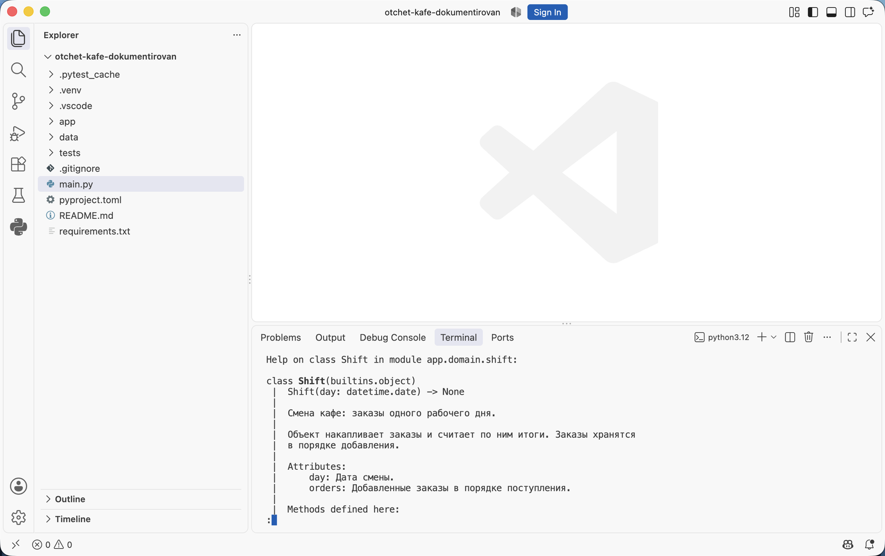

Аннотации типов и документация кода · МДК.01.01 · разработка программных модулей
Глава 4.8
Разбор случаев:
двенадцать функций
В этой главе двенадцать небольших функций, классов и модулей из проектов курса задокументированы в формате Google. Каждый случай отличается от предыдущего одной особенностью: значение по умолчанию, возврат None, исключение, изменение аргумента на месте, генератор, чтение файла, служебное имя с подчёркиванием. Под каждым примером указано, что в этом случае попадает в докстринг.
- Категория
- Разбор примеров
- Уровень
- Начальный
- Формат
- Google, как принято в курсе
- Зачем это знать
- Документировать свой код по образцу близкого случая
§1Как пользоваться разбором
Все функции взяты из проекта темы — «Отчёт кафе» из главы 4.5, и лежат в тех же файлах, что указаны в подписи к каждому примеру. Описания записаны в формате Google.
Порядок разбора в каждом случае одинаковый: сначала код функции вместе с докстрингом, затем строка о том, что в этом случае описывается и какие разделы нужны. Случаи идут от простого к сложному и не зависят друг от друга: к нужному можно перейти по оглавлению.
Разбор читается рядом с проектом: в редакторе открыт код без описаний, в книге — этот разбор. Второй архив содержит те же функции с готовыми докстрингами.
§2Случай 1. Короткая функция без параметров
def today_label() -> str: """Возвращает текущую дату в виде «21.09.2026» для шапки отчёта.""" return date.today().strftime("%d.%m.%Y")
today_label() -> str
Возвращает текущую дату в виде «21.09.2026» для шапки отчёта.
Параметров нет, значение одно, исключений функция не возбуждает — хватает однострочного докстринга. Описание при этом сообщает то, чего в подписи нет: дата приходит с точками и в порядке «день, месяц, год». Открывать тело функции, чтобы это выяснить, не требуется.
§3Случай 2. Значение по умолчанию
def format_title(text: str, width: int = 40) -> str: """Центрирует заголовок отчёта, достраивая строку знаками «=». Args: text: Текст заголовка без пробелов по краям. width: Итоговая ширина строки в знаках. Значение по умолчанию совпадает с шириной отчёта в консоли. Returns: Строка ровно указанной ширины; более длинный текст не обрезается. """ return text.center(width, "=")
Значение по умолчанию видно из подписи, а его смысл — нет. В докстринге записаны две вещи: откуда взялось число 40 и что происходит на границе — текст длиннее указанной ширины остаётся целым. Поведение на границе описывают всегда: из подписи и из имени функции оно не следует.
§4Случай 3. Функция ничего не возвращает
def print_report(lines: list[str]) -> None: """Печатает готовый отчёт в консоль построчно. Args: lines: Строки отчёта в порядке вывода. Note: Функция только печатает: расчёты и форматирование выполняются до вызова, в services и utils. """ for line in lines: print(line)
Раздел Returns: при возврате None не пишут: возвращать нечего, и аннотация об этом уже сообщила. Вместо него указывают действие функции — здесь это вывод в консоль. Раздел Note: отмечает границу ответственности: этот модуль не считает и не форматирует.
§5Случай 4. Функция возбуждает исключение
def calculate_average(grades: list[int]) -> float: """Считает среднюю оценку по списку. Args: grades: Оценки от 2 до 5, список не должен быть пустым. Returns: Среднее значение, округлённое до двух знаков. Raises: ValueError: Если список оценок пуст. Среднее по пустому списку не определено, поэтому нуль в этом случае не возвращается. """ if not grades: raise ValueError("Список оценок пуст") return round(sum(grades) / len(grades), 2)
Раздел Raises: перечисляет исключения, которые функция возбуждает сама, и условие каждого. По нему вызывающий код решает, что перехватывать. Исключения, которые возникают внутри вызванных библиотек и здесь не обрабатываются, в этот раздел не переписывают: их перечень не определён и меняется от версии к версии.
Строка «оценки от 2 до 5» — договорённость предметной области, которую функция не проверяет. Такие ограничения в докстринге указывают прямо: читатель видит, при каких данных функция задумана работать. Когда ограничение важно соблюсти, его переносят в проверку внутри функции, и тогда в разделе Raises: появляется ещё одна строка.
§6Случай 5. Аргумент меняется на месте
def sort_orders_in_place(orders: list[Order]) -> None: """Сортирует список заказов по убыванию суммы, изменяя сам список. Args: orders: Список заказов. Порядок элементов в нём меняется, новый список не создаётся. Note: Вызывающий код после вызова получает изменённый список. Когда исходный порядок нужно сохранить, передают его копию: sort_orders_in_place(orders.copy()). """ orders.sort(key=lambda order: -order.kopeks)
>>> orders = [Order('Иванов Пётр', 100), Order('Петрова Анна', 900)] >>> sort_orders_in_place(orders) >>> orders [Order(waiter='Петрова Анна', kopeks=900), Order(waiter='Иванов Пётр', kopeks=100)]
Функция ничего не вернула, а список у вызывающего кода стал другим: порядок элементов изменился. Это и описывает раздел Note:.
Изменение переданного объекта из подписи не видно: аннотация -> None одинакова у функции, которая печатает, и у функции, которая перестраивает список вызывающего кода. Побочное действие описывают всегда: запись файла, изменение аргумента, обращение к сети, запись в журнал.
§7Случай 6. Генератор
def read_rows(path: Path) -> Iterator[dict[str, str]]: """Читает CSV-файл построчно, не загружая его целиком в память. Args: path: Путь к файлу с колонками waiter и kopeks. Yields: Очередную строку файла в виде словаря «колонка — значение». Raises: FileNotFoundError: Если файла по указанному пути нет. Note: Файл остаётся открытым, пока перебор не закончен. Прервав перебор, вызывающий код закрывает генератор сам либо использует его внутри цикла for до конца. """ with open(path, encoding="utf-8", newline="") as file: yield from csv.DictReader(file)
read_rows(path: pathlib.Path) -> collections.abc.Iterator[dict[str, str]]
Читает CSV-файл построчно, не загружая его целиком в память.
Args:
path: Путь к файлу с колонками waiter и kopeks.
Yields:
Очередную строку файла в виде словаря «колонка — значение».
Raises:
FileNotFoundError: Если файла по указанному пути нет.
Note:
Файл остаётся открытым, пока перебор не закончен. Прервав перебор,
вызывающий код закрывает генератор сам либо использует его внутри
цикла for до конца.
В справке видно и тип результата — Iterator, и раздел Yields: по ним в вызывающем коде видно, что значения придут по одному при переборе.
У генератора вместо Returns: пишут Yields: и описывают, что приходит на каждом шаге перебора. Вторая особенность — время жизни ресурса: пока перебор идёт, файл открыт. Это тоже сведения для вызывающего кода, и место им в докстринге.
§8Случай 7. Несколько значений в результате
def grade_bounds(grades: list[int]) -> tuple[int, int]: """Находит минимальную и максимальную оценку. Args: grades: Оценки студента, список не должен быть пустым. Returns: Пара «минимум, максимум» именно в этом порядке. Raises: ValueError: Если список оценок пуст. """ if not grades: raise ValueError("Список оценок пуст") return min(grades), max(grades)
Аннотация tuple[int, int] сообщает, что в результате два целых числа, и не сообщает, какое из них первое. Порядок значений в паре — обязательная строка в Returns:. Перепутанный порядок при распаковке даёт работающую программу с неверными числами в отчёте.
§9Случай 8. Работа с файлом
def save_report(path: Path, lines: list[str]) -> int: """Записывает отчёт в текстовый файл в кодировке UTF-8. Args: path: Путь к файлу. Существующий файл перезаписывается, родительская папка должна существовать. lines: Строки отчёта без символов перевода строки на концах. Returns: Количество записанных строк. Raises: FileNotFoundError: Если родительской папки нет. PermissionError: Если на запись в эту папку нет прав. """ with open(path, "w", encoding="utf-8") as file: file.write("\n".join(lines)) return len(lines)
>>> save_report(Path('otchet.txt'), ['Смена', 'Иванов Пётр 1 685,00 ₽']) 2 >>> save_report(Path('net-takoy-papki/otchet.txt'), ['Смена']) FileNotFoundError: [Errno 2] No such file or directory: 'net-takoy-papki/otchet.txt'
Первый вызов вернул 2 — столько строк записано. Второй возбудил FileNotFoundError, потому что родительской папки нет; это условие и записано в разделе Raises:.
Функции, которые пишут на диск, описывают подробнее остальных: что происходит с существующим файлом, в какой кодировке пишется текст, какие условия должны быть выполнены заранее. Перезапись без предупреждения — поведение, которое нужно указать прямо, потому что по имени save_report оно не определяется.
§10Случай 9. Служебная функция
def _squash_spaces(value: str) -> str: """Заменяет подряд идущие пробелы одним.""" return " ".join(value.split()) def normalize_name(name: str) -> str: """Приводит имя официанта к виду «Фамилия Имя». Лишние пробелы убираются, каждое слово начинается с заглавной буквы. Имена из файла записаны по-разному, а группировка заказов идёт по совпадению строк, поэтому вызывать эту функцию нужно сразу при чтении данных. Args: name: Имя в произвольном виде, например « иванов пётр ». Returns: Имя вида «Иванов Пётр». """ return _squash_spaces(name).title()
Подчёркивание в начале имени означает, что функция служебная и вызывается внутри своего модуля. Для неё достаточно одной строки. Публичная функция рядом описана подробно: в её докстринге есть то, чего в коде нет — причина, по которой нормализацию делают при чтении данных.
§11Случай 10. Класс с методами
class Shift: """Смена кафе: заказы одного рабочего дня. Объект накапливает заказы и считает по ним итоги. Заказы хранятся в порядке добавления. Attributes: day: Дата смены. orders: Добавленные заказы в порядке поступления. """ def __init__(self, day: date) -> None: """Создаёт пустую смену на указанную дату.""" self.day = day self.orders: list[Order] = [] def add(self, order: Order) -> None: """Добавляет заказ в конец списка смены. Args: order: Заказ с уже нормализованным именем официанта. """ self.orders.append(order) def total_kopeks(self) -> int: """Возвращает выручку смены в копейках; у пустой смены — 0.""" return sum(order.kopeks for order in self.orders)

help(Shift). Сверху подпись создания объекта, затем краткая строка и пояснение, ниже раздел Attributes с двумя полями. За ним идёт перечень методов: у каждого своя подпись и своё описание.Докстринг класса описывает, что представляет объект, и перечисляет атрибуты в разделе Attributes:. У __init__ здесь хватает одной строки: проверок нет, параметр один и он аннотирован. Метод total_kopeks описан однострочно с указанием поведения на пустой смене — это тот пограничный случай, из-за которого читатель иначе открыл бы тело метода.
§12Случай 11. Dataclass
@dataclass(frozen=True) class Order: """Один заказ из файла смены. Объект неизменяемый: после создания сумму и официанта поменять нельзя, поэтому заказы можно безопасно передавать между слоями. Attributes: waiter: Имя официанта в виде «Фамилия Имя». kopeks: Сумма заказа в копейках, неотрицательная. """ waiter: str kopeks: int def __post_init__(self) -> None: """Проверяет данные сразу после создания заказа. Raises: ValueError: Если сумма отрицательная. """ if self.kopeks < 0: raise ValueError("Сумма заказа не может быть отрицательной") object.__setattr__(self, "waiter", normalize_name(self.waiter))
У dataclass поля объявлены в теле класса, а метод __init__ создаётся автоматически — писать в нём докстринг негде. Поэтому сведения о полях идут в раздел Attributes: докстринга класса, а проверки выносятся в __post_init__, и уже у него свой докстринг с разделом Raises:.
Последняя строка примера меняет поле через object.__setattr__: у неизменяемого объекта обычное присваивание запрещено, а имя официанта нужно привести к одному виду один раз при создании. Такие неочевидные места объясняют в докстринге класса или комментарием рядом.
§13Случай 12. Модуль и пакет
"""Заказы смены: чтение данных и расчёты по ним. Модуль работает только с данными: читает CSV, собирает объекты Order и считает итоги. Печать и форматирование — в app/ui и app/utils. Суммы во всём модуле хранятся в копейках, целыми числами. """ import csv from pathlib import Path
"""Отчёт кафе: выручка по официантам за смену.
Пакеты:
domain — объекты предметной области: заказ, смена.
services — чтение данных и расчёты.
utils — форматирование строк и сумм.
ui — вывод в консоль.
Точка входа — main.py в корне проекта.
"""
Докстринг модуля отвечает на вопрос, за что отвечает файл, и называет границу: чего в этом модуле нет. Докстринг пакета в __init__.py даёт карту: перечень вложенных пакетов с одной строкой о каждом и указание точки входа. С такой картой человек, открывший репозиторий впервые, понимает раскладку до чтения кода.
§14Сокращение многословного описания
Длина докстринга не показатель качества. Пример ниже описывает функцию из случая 4 в двадцать строк, повторяя подпись, пересказывая тело и оценивая код.
"""Эта очень важная функция calculate_average предназначена для того, чтобы вычислять среднее арифметическое значение оценок студента.
Она принимает на вход параметр grades типа список целых чисел int и возвращает значение типа float.
Внутри функции сначала проверяется, пустой ли список. Затем вызывается встроенная функция sum, результат делится на len, после чего round округляет до двух знаков.
Функция написана эффективно и не требует доработок."""
"""Считает среднюю оценку по списку.
Args:
grades: Оценки от 2 до 5, список не должен быть пустым.
Returns:
Среднее значение, округлённое до двух знаков.
Raises:
ValueError: Если список оценок пуст."""
Из левого варианта убрано четыре вида лишнего текста: оценка кода («очень важная», «написана эффективно»), повтор имени функции, повтор типов из аннотаций и пересказ тела построчно. Пересказ тела вреднее прочего: он устаревает при первой же правке реализации, хотя поведение функции остаётся тем же.
§15Что писать и чего не писать
| Попадает в докстринг | Остаётся вне докстринга |
|---|---|
| Действие функции одним предложением | Имя функции и перечень её параметров словами |
| Единицы измерения: копейки, знаки после запятой, кодировка | Типы, уже указанные в аннотациях |
| Ограничения на входные данные | Пересказ тела построчно |
| Поведение на границе: пустой список, нуль, превышение ширины | Выбор конкретных строк реализации — это комментарий |
| Порядок значений в результате | Оценка кода и планы на будущее |
| Возбуждаемые исключения и их условия | Исключения из глубины сторонних библиотек |
| Побочные действия: запись файла, изменение аргумента, сеть | Сведения, которые меняются чаще кода: сроки, фамилии, номера задач |
§16Мини-практика: десять минут
Работа идёт на стартовом архиве проекта темы: код в нём тот же, описаний нет.
- Откройте
app/services/orders.pyи найдите функцию без докстринга, которая возвращает значение. Задокументируйте её по случаю2или7. - Найдите функцию, которая возбуждает
ValueError, и добавьте разделRaises:с условием ошибки. - Найдите функцию, которая печатает или пишет файл, и опишите её действие без раздела
Returns:. - Добавьте докстринг модуля первой строкой файла: за что отвечает и чего в нём нет.
- Добавьте докстринг пакета в
app/__init__.pyс перечнем вложенных пакетов. - Выполните
python -c "import app.services.orders as m; help(m)"и проверьте, что описания на месте, а порядок разделов совпадает с образцами главы.
§17Проверьте себя
Функция возвращает None. Нужен ли раздел Returns:?
Нет. Возвращать нечего, и аннотация -> None об этом сообщила. Вместо результата описывают действие функции: печать, запись файла, изменение переданного объекта.
Почему изменение аргумента на месте обязательно указывать в докстринге?
По подписи это неотличимо от других функций с -> None: аннотация одинакова и у той, которая печатает, и у той, которая перестраивает список вызывающего кода. Вызывающий код получит изменённые данные без предупреждения, и обнаружится это в работе программы.
Какой раздел ставят генератору и что ещё у него описывают?
Раздел Yields: — что приходит на каждом шаге перебора. Дополнительно описывают время жизни ресурса: пока перебор не закончен, открытый файл остаётся открытым, и прерванный перебор вызывающему коду нужно закрыть.
Функция возвращает tuple[int, int]. Что нужно написать в Returns:?
Порядок значений в паре: что идёт первым, что вторым. Из аннотации это не следует. Перепутанная распаковка даёт работающую программу с неверными числами.
Чем докстринг dataclass отличается от докстринга обычного класса?
У dataclass метод __init__ создаётся автоматически, поэтому его докстринг писать негде: сведения о полях идут в раздел Attributes: докстринга класса. Проверки, вынесенные в __post_init__, документируются в этом методе, с разделом Raises:.
Что из этого лишнее в докстринге: единицы измерения, пересказ тела, порядок значений в результате, оценка кода?
Лишние пересказ тела и оценка кода. Пересказ устаревает при первой правке реализации, оценка не сообщает читателю ничего о поведении функции. Единицы измерения и порядок значений в результате нужны: из подписи они не следуют.
§18Шпаргалка по главе
нет параметров
нет исключений
служебная функция с _
ограничения на данные
смысл значения по умолчанию
единицы измерения
Yields: у генератора
ничего при -> None
Attributes: у класса
запись и перезапись файла
изменение аргумента
порядок значений в паре
класс ошибки + условие
только свои исключения
повтор подписи и типов
пересказ тела
оценку кода
Итог главы
Двенадцать разобранных случаев дают образцы для большей части кода в учебном проекте. Короткой функции без параметров хватает одной строки. Значение по умолчанию требует пояснения смысла. При возврате None раздел о результате опускают и описывают действие. Исключения, которые функция возбуждает сама, перечисляют с условиями. Изменение переданного объекта, запись файла и другие побочные действия описывают всегда, потому что из подписи они не видны. У генератора вместо результата описывают выдаваемые значения и время жизни открытого ресурса. У класса сведения о полях идут в раздел атрибутов, у dataclass — туда же, поскольку метод создания генерируется автоматически. Докстринг модуля называет ответственность файла, докстринг пакета в __init__.py даёт карту вложенных пакетов. Лишними в докстринге оказываются повтор подписи, пересказ тела и оценка кода. В следующей главе эти описания начинает создавать редактор: разобраны расширение-генератор для VS Code, настройка формата и автоматическая проверка, которая находит недокументированные функции.
- Разделы и их порядок в формате Google — руководство по стилю Python от Google, раздел о комментариях и докстрингах.
- Требования к первой строке и оформлению — PEP 257.
- Поведение
__post_init__и автоматический__init__— документация модуля dataclasses. - Код функций — проект темы «Отчёт кафе», архивы к главе 4.5.